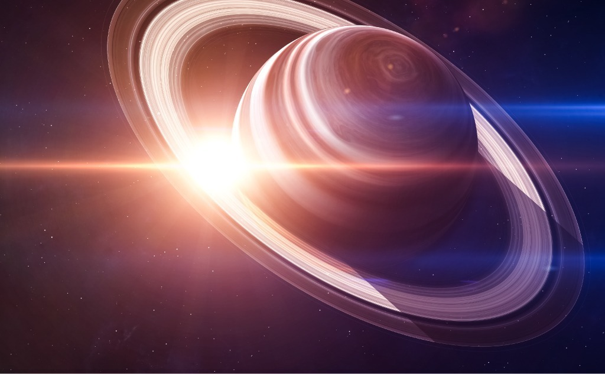

Overview
Saturn is the sixth planet from the Sun and the second-largest planet in our solar system. Adorned with thousands of beautiful ringlets, Saturn is unique among the planets. It is not the only planet to have rings – made of chunks of ice and rock – but none are as spectacular or as complicated as Saturn's. Like fellow gas giant Jupiter, Saturn is a massive ball made mostly of hydrogen and helium.